File: 001110.gt.txt (if the image is defective, simply delete all Arabic text and the line will be excluded)
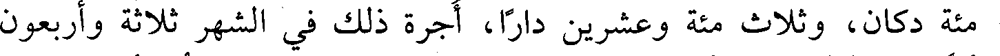
مئة دكان، وثلاث مئة وعشرين دارا، أجرة ذلك في الشهر ثلاثة وأربعون
File: 001111.gt.txt (if the image is defective, simply delete all Arabic text and the line will be excluded)
ألفا، ودخل في الجملة ثلاثة وثلاثون مسجدا. فقال رجل لأبي الفضل
File: 001112.gt.txt (if the image is defective, simply delete all Arabic text and the line will be excluded)
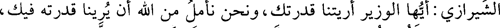
الشيرازي: أيها الوزير أريتنا قدرتك، ونحن نأمل من الله أن يرينا قدرته فيك،
File: 001113.gt.txt (if the image is defective, simply delete all Arabic text and the line will be excluded)
فلم يجبه، وكثر الدعاء عليه. ثم أن عز الدولة قبض عليه وسلمه إلى الشريف
File: 001114.gt.txt (if the image is defective, simply delete all Arabic text and the line will be excluded)
أبي الحسن محمد بن عمر العلوي، فأنفذه إلى الكوفة، وسقي ذراريح(1)،
File: 001115.gt.txt (if the image is defective, simply delete all Arabic text and the line will be excluded)
فتقرحت مثانته، فهلك في ذي الحجة من هذه السنة، لا رحمه الله.
File: 001116.gt.txt (if the image is defective, simply delete all Arabic text and the line will be excluded)
وفي يوم الجمعة ثامن رمضان دخل المعز أبو تميم معد بن إسماعيل
File: 001117.gt.txt (if the image is defective, simply delete all Arabic text and the line will be excluded)
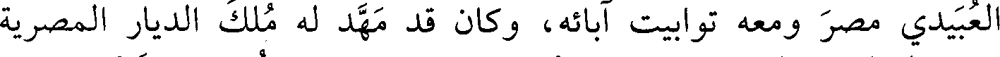
العبيدي مصر ومعه توابيت آبائه، وكان قد مهد له ملك الديار المصرية
File: 001118.gt.txt (if the image is defective, simply delete all Arabic text and the line will be excluded)
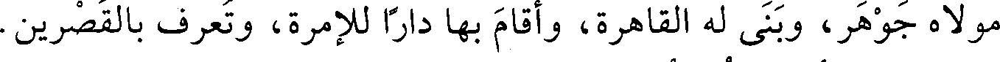
مولاه جوهر، وبنى له القاهرة، وأقام بها دارا للإمرة، وتعرف بالقصرين.
File: 001119.gt.txt (if the image is defective, simply delete all Arabic text and the line will be excluded)
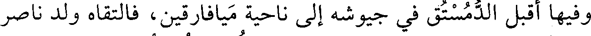
وفيها أقبل الدمستق في جيوشه إلى ناحية ميافارقين، فالتقاه ولد ناصر
File: 001120.gt.txt (if the image is defective, simply delete all Arabic text and the line will be excluded)
الدولة بن حمدان وهزم الروم، ولله الحمد، وأسر الدمستق الخبيث، وبقي
File: 001121.gt.txt (if the image is defective, simply delete all Arabic text and the line will be excluded)
عز الدولة بختيار، ثم خرج إلى فارس.
File: 001122.gt.txt (if the image is defective, simply delete all Arabic text and the line will be excluded)
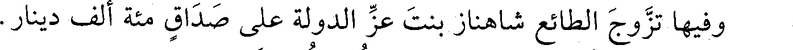
وفيها تزوج الطائع شاهناز بنت عز الدولة على صداق مئة ألف دينار.
File: 001123.gt.txt (if the image is defective, simply delete all Arabic text and the line will be excluded)
وفي رجب عدمت الأقوات حتى أبيع كر الدقيق بمئة وسبعين دينارا،
File: 001124.gt.txt (if the image is defective, simply delete all Arabic text and the line will be excluded)
والتمر ثلاثة أرطال بدرهم.
File: 001125.gt.txt (if the image is defective, simply delete all Arabic text and the line will be excluded)
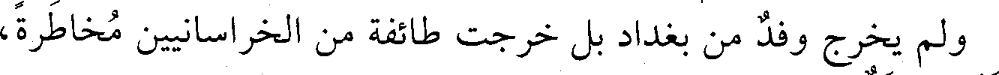
ولم يخرج وفد من بغداد بل خرجت طائفة من الخراسانيين مخاطرة،
File: 001126.gt.txt (if the image is defective, simply delete all Arabic text and the line will be excluded)
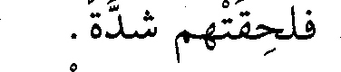
فلحقتهم شدة.
File: 001127.gt.txt (if the image is defective, simply delete all Arabic text and the line will be excluded)
وفي سلخ ذي القعدة عزل قاضي القضاة أبو الحسن محمد ابن أم
File: 001128.gt.txt (if the image is defective, simply delete all Arabic text and the line will be excluded)
شيبان، وولي أبو محمد بن معروف.
File: 001129.gt.txt (if the image is defective, simply delete all Arabic text and the line will be excluded)
وفي هذه السنين وبعدها كان الرفض يغلي ويفور بمصر والشام،
File: 001130.gt.txt (if the image is defective, simply delete all Arabic text and the line will be excluded)
والمغرب والمشرق، لا سيما بالعبيدية الباطنية، قاتلهم الله.
File: 001131.gt.txt (if the image is defective, simply delete all Arabic text and the line will be excluded)
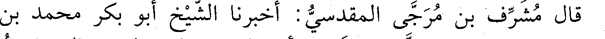
قال مشرف بن مرجى المقدسي: أخبرنا الشيخ أبو بكر محمد بن
File: 001132.gt.txt (if the image is defective, simply delete all Arabic text and the line will be excluded)
الحسن قال: حدثني الشيخ الصالح أبو القاسم الواسطي، قال: كنت
File: 001133.gt.txt (if the image is defective, simply delete all Arabic text and the line will be excluded)
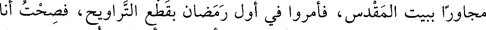
مجاورا ببيت المقدس، فأمروا في أول رمضان بقطع التراويح، فصحت أنا
File: 001134.gt.txt (if the image is defective, simply delete all Arabic text and the line will be excluded)
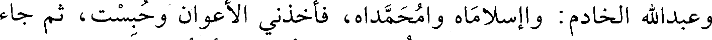
وعبدالله الخادم: واإسلاماه وامحمداه، فأخذني الأعوان وحبست، ثم جاء
File: 001135.gt.txt (if the image is defective, simply delete all Arabic text and the line will be excluded)
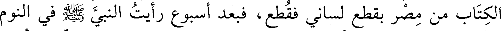
الكتاب من مصر بقطع لساني فقطع، فبعد أسبوع رأيت النبي صعلم في النوم
File: 001136.gt.txt (if the image is defective, simply delete all Arabic text and the line will be excluded)
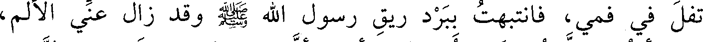
تفل في فمي، فانتبهت ببرد ريق رسول الله صعلم وقد زال عني الألم،
File: 001137.gt.txt (if the image is defective, simply delete all Arabic text and the line will be excluded)
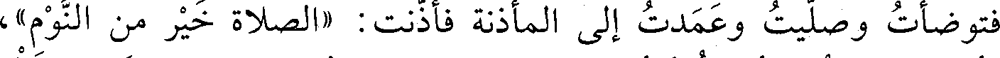
فتوضأت وصليت وعمدت إلى المأذنة فأذنت «الصلاة خير من النوم»،
File: 001138.gt.txt (if the image is defective, simply delete all Arabic text and the line will be excluded)
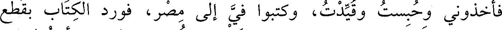
فأخذوني وحبست وقيدت، وكتبوا في إلى مصر، فورد الكتاب بقطع
File: 001139.gt.txt (if the image is defective, simply delete all Arabic text and the line will be excluded)
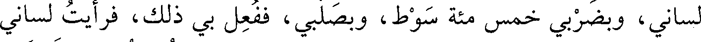
لساني، وبضربي خمس مئة سوط، وبصلبي، ففعل بي ذلك، فرأيت لساني
To Save: `Ctrl+s`, make sure to choose `Webpage, complete`!